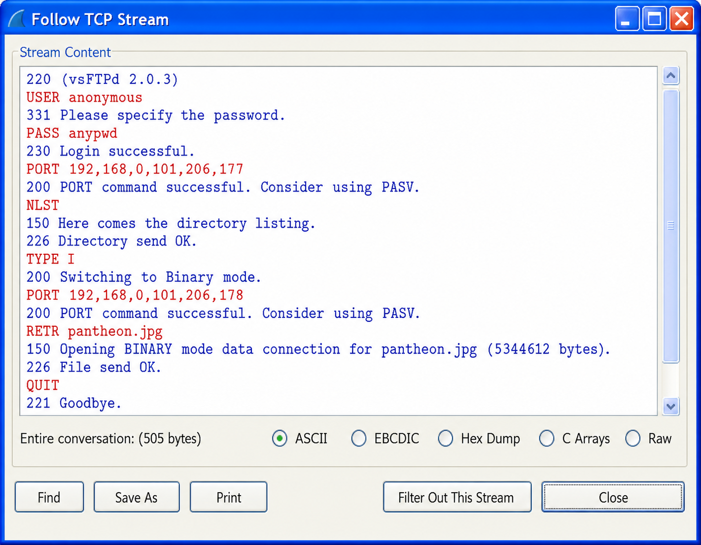
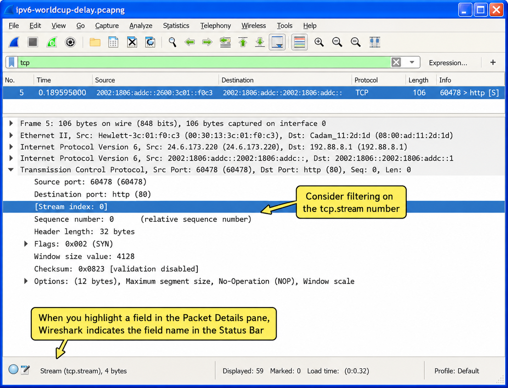
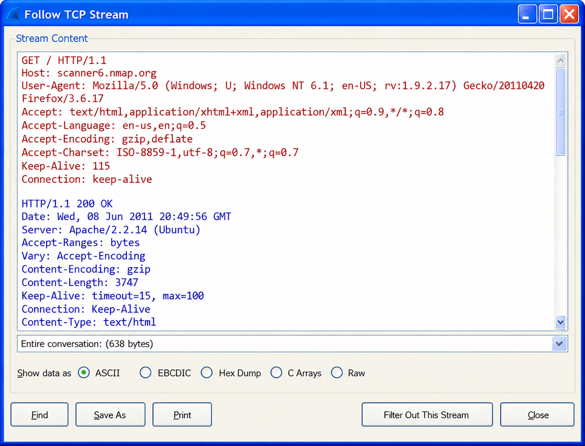
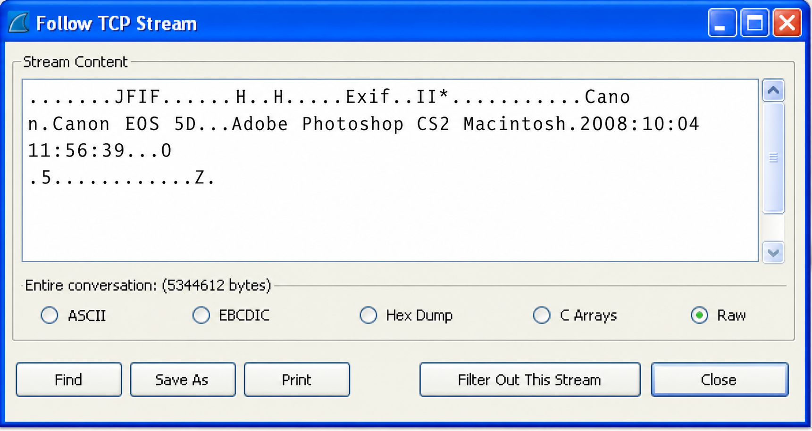
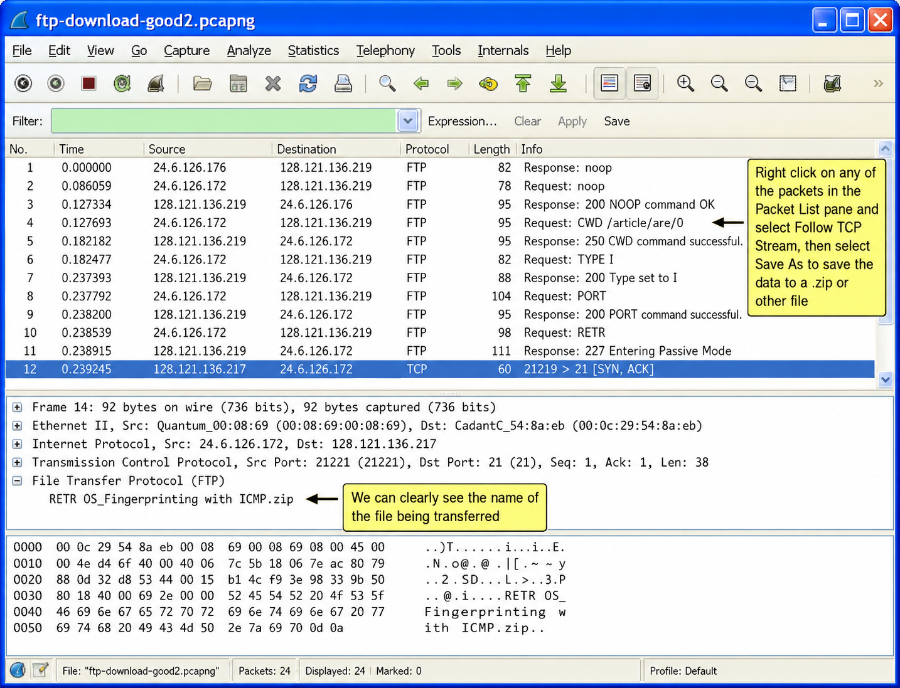
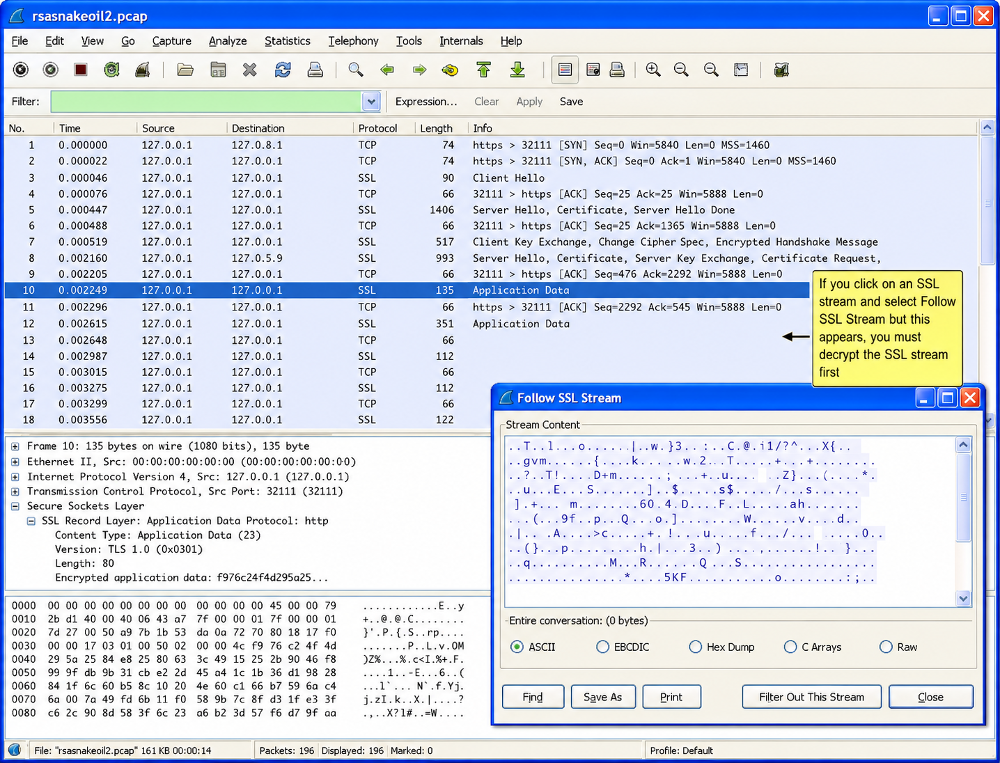
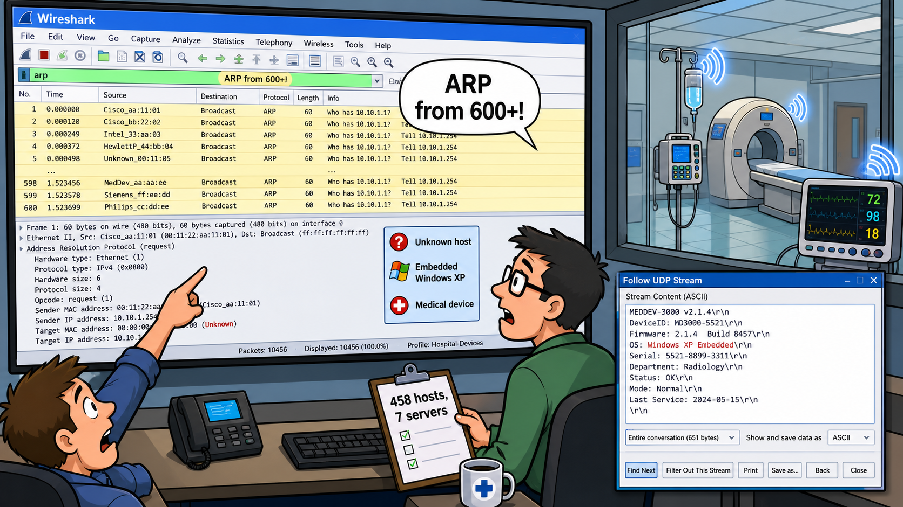

What does Wireshark strip away when it follows a stream, and why does removing those headers make the conversation more readable?
When you right-click a packet to follow a stream, what determines whether TCP, UDP, or SSL options appear in the menu?
The Basics of Traffic Reassembly
Wireshark offers the ability to follow communication streams. The Follow Streams process reassembles the communications (minus the MAC header, network header, and transport headers).
Figure 153 shows the result of following the TCP stream of an FTP command session. By default, Wireshark color codes the conversation in the streams window—red for traffic from the client (the host initiating the conversation) and blue for traffic from the server. You can change the color coding using Edit | Preferences | Colors.

Right click on a packet in the Packet List pane or Packet Bytes pane to select Follow UDP Stream, Follow TCP Stream, or Follow SSL Stream. The traffic type that you have selected defines which option is available in the list.
UDP is connectionless and has no built-in sequencing. How does Wireshark still manage to reassemble a coherent stream from UDP packets?
What is the key limitation on reassembling UDP data that would prevent you from recovering a video stream this way?
Follow and Reassemble UDP Conversations
As long as the traffic has a UDP header, the option to Follow UDP Stream is available. Right click on a UDP packet and select Follow UDP Stream.
One example of using UDP stream reassembly is the process of reassembling a multicast video stream. As long as the video data is not encrypted, you can reassemble the data, use Save As to save the video stream in a video file format, and open and replay it with a video player.
Figure 154 shows a UDP stream in the background. Upon reassembling the UDP stream, a display filter was created for the UDP conversation: (ip.addr eq 192.168.1.12 and ip.addr eq 239.255.0.1) and (udp.port eq 1024 and udp.port eq 8001). In the Stream Content window the data is displayed in raw format by default. Clicking Save As, the data was saved in a file called videostream1. VLC Player automatically detected the video type and could open and play the video.

When you follow a TCP stream, Wireshark applies a display filter using a stream index number. What problem does this cause after you finish examining the stream, and how do you fix it?
How does the JFIF file identifier help you recover a JPEG image from within a raw TCP stream even if you do not know the filename?
Follow and Reassemble TCP Conversations
You can reassemble web browsing sessions, FTP command channel sessions, FTP data transfer channel sessions, or any other TCP-based communications. Right click on a TCP packet and select Follow TCP Stream.
In some cases, you will see commands and application headers prefacing the data being transferred. For example, when reassembling an HTTP web browsing session, you will see the GET requests from the clients and the HTTP response codes from the server as well as the data that is being transferred.
When you follow TCP streams, a display filter based on the TCP stream index number is used. The format of the filter is tcp.stream eq x. This filter syntax is also used when you follow SSL streams. The tcp.stream index value is shown in Figure 155. Use this field to filter on a conversation from the Packet Details pane.

Figure 156 shows a reassembled web browsing session on World IPv6 Day (June 8, 2011). We can see what browser is used for the browsing session (Firefox), the target (scanmev6.nmap.org), and the OS type of the target (Ubuntu).

When analyzing or troubleshooting HTTP communications, Follow TCP Stream can be very useful to examine commands and responses. In Figure 157 we reassembled an HTTP POST process where we can clearly see the data being sent from the client to the HTTP server. In this case, a user is filling out an online form on a web server.

What if we want to reassemble data in an HTTP communication? One option is to choose File | Export | Objects | HTTP to extract the objects downloaded during the entire HTTP session.
In some cases, however, you need to look through the data stream to find an embedded file. You can use a file extension or a file identifier to determine the type of file transferred. The file identifier is contained in the leading bytes of a file and is used to define whether a file is a Word document, a trace file, an Excel spreadsheet, an Open Office document, etc.
In Figure 158, a TCP stream contains a graphics file. We can determine this by a file identifier—JFIF (JPEG File Interchange Format). In Wireshark, we can save the entire TCP stream as a .jpg file using Save As. We can then view the file clearly.

Why can you not always rely on a file extension to identify the type of data embedded in a TCP stream, and what is a more reliable method?
Several file types (Excel .xls, PowerPoint .ppt, Word .doc) share the same leading hex bytes. What does that tell you about the relationship between those legacy Office formats?
Identify Common File Types
Files begin with file identifiers that indicate the application used to create or open the file. The following list provides some basic file identifier values. View streams in hex dump format so you can use the Find feature to locate these hex values in a stream.
For more information on file types and file extensions, visit mark0.net/soft-trid-deflist.html.
| File Type | Extension | File Identifier (Hex) |
|---|---|---|
| Excel | .xls | D0 CF 11 E0 A1 B1 1A E1 00 |
| JPEG Bitmap | .jpg | FF D8 FF |
| Open Office Document | .odp | 50 4B 03 04 |
| Portable Network Graphics | .png | 89 50 4E 47 0D 0A 1A 0A 00 00 00 0D 49 48 44 52 |
| PowerPoint Slide Deck | .ppt | D0 CF 11 E0 A1 B1 1A E1 00 |
| PowerPoint XML | .pptx | 50 4B 03 04 |
| Word | .doc | D0 CF 11 E0 A1 B1 1A E1 |
| Word 2007 | .docx | 50 4B 03 04 |
| PK Zip File | .zip | 50 4B 03 04 |
| Packet Capture File | .pcap | D4 C3 B2 A1 |
| Packet Capture File | .pcapng | 0A 0D 0D 0A |
50 4B 03 04 because modern Office XML formats and Open Office files are actually ZIP containers. Use the filename in the FTP command channel or context clues to distinguish them when magic bytes are identical.
FTP can transfer data on any port number dynamically negotiated at runtime. What are the two FTP command-channel indicators you filter on to discover which port the data channel is using?
What is the difference between an FTP passive (PASV) and active (PORT) data channel, and how does that affect which response or command you look for?
Reassemble an FTP File Transfer
It is an easy process to reassemble files transferred using FTP. The first step is to locate the FTP data channel. Refer to Chapter 24: Analyze File Transfer Protocol (FTP) Traffic for details on FTP command and data channels.
FTP data can run over any port number. Filter for ftp.response.code==227 || ftp.request.command=="PORT" to view the FTP command channel traffic that will indicate the port used for data transfer. The response code 227 indicates that a passive FTP data channel is being established. The FTP command PORT is used for an active command. Packets that match these two filters contain the IP address and port number of the data channel.
Figure 159 shows an FTP communication using a dynamic port number for the data transfer. Follow along—the trace file is called ftp-download-good2.pcapng (available at www.wiresharkbook.com).
In ftp-download-good2.pcapng, the client has requested that the server enter passive mode (PASV). In packet 8, the server indicates that it is entering passive mode and defines the port number it will use for the FTP communications—port 30189. Immediately following the response, the client completes the TCP handshake to port 30189. The client sends two more commands on the FTP command channel: SIZE and RETR. The RETR command is the request to transfer the file OS Fingerprinting with ICMP.zip (the name is truncated in the screenshot).
Once you know what port the FTP data transfer takes place on, right click on a packet in that data stream and select Follow TCP Stream.

We can now right click on packet 9, the first packet of the data channel TCP handshake, and select Follow TCP Stream. We know this is a .zip file based on the file name. Selecting Save As and naming the file allows us to unzip and open the PDF file contained therein.
ftp.response.code==227 || ftp.request.command=="PORT" to find data channel port. (2) Code 227 = passive mode server port; PORT command = active mode client port. (3) Right-click first packet of data channel TCP handshake → Follow TCP Stream → Save As. (4) Use filename or file identifier to confirm file type.Why would the SSL Stream window appear completely blank even after you right-click and select Follow SSL Stream, and what single configuration step fixes it?
What four pieces of information must you supply when adding an RSA key to Wireshark's SSL protocol preferences?
Follow and Reassemble SSL Conversations
Wireshark can decrypt SSL communications if you define RSA keys in Edit | Preferences | Protocols | SSL. For more information on SSL decryption and a sample SSL encrypted file, visit Analyze TLS Encrypted Alerts and wiki.wireshark.org/SSL.
In this example, the rsasnakeoil2.pcap file and the RSA decryption key were downloaded. A right-click on a decrypted SSL packet was performed and Follow SSL Streams was selected.
Figure 160 shows the rsasnakeoil2.pcap trace file. The SSL protocol has not yet been configured with a link to the RSA key, so no data is available when we follow the SSL stream.

In Figure 161 we have entered the RSA key information in the SSL protocol section under preferences. The setting defines the IP address of a host in the trace file, the port number of the traffic to decrypt, the traffic type (after decryption), and the path and key file name.

In Figure 162, we have applied the RSA key to the Wireshark SSL protocol configuration. When we follow the SSL stream in the rsasnakeoil2.pcap trace after setting up the RSA key, we can see the HTTP session contents and see the HTTP requests and responses clearly.

For another example of decrypting and analyzing SSL streams, refer to Analyze HTTPS Communications.
tcp.stream eq X filter format as Follow TCP Stream. Practice trace: rsasnakeoil2.pcap + key from wiki.wireshark.org/SSL.Why does Follow TCP Stream work poorly for SMB file transfers compared to using File | Export Objects | SMB?
What structural property of SMB makes it unsuitable for raw stream reassembly that simpler protocols like FTP do not have?
Reassemble an SMB Transfer
The fastest way to reassemble a file transferred through SMB: use File | Export Objects | SMB. Open smb-filexfer.pcapng and refer to packet 56 for the name of the file.
Follow TCP Stream does not work well with SMB data transfers because of the back-and-forth nature of SMB. As you look through smb-filexfer.pcapng you will notice the client periodically asking for the next 61,440 bytes of the file. These periodic file requests fill the stream with client requests and SMB headers on the response packets. It is a waste of time trying to clean this up when we have the File | Export Objects | SMB capability. Refer to File | Export.
Case Study
The hospital IT staff stated they had 458 hosts and 7 servers at the location where we were working. The job was focused on training this staff to use Wireshark to quickly spot network problems and fix them fast.
During the analysis process, we captured all network traffic off a switch—we did not span the port—we were just examining the broadcast and multicast traffic on the network. As we talked about broadcast traffic rates it became evident that this network had more than 458 hosts and 7 servers. We saw ARP broadcasts from over 600 devices throughout the day.
The IT team said this just could not be possible. In addition, they did not believe they had such a flat network—they had routers in place and no single subnet should have more than about 210 devices on it.
It was time to start spanning various switch ports to capture more than just ARP broadcasts from these devices. We decided to capture traffic to file sets to deal with the high amount of traffic we were capturing.
It did not take long to see some undecoded traffic crossing the network from a host that the IT team did not recognize. We focused in on this traffic.
Since Wireshark did not have a dissector for this traffic, we could not tell right away what the mysterious device was saying. By reassembling the UDP streams we could see some interesting text strings that helped us identify these devices. They were various pieces of medical equipment that had embedded Windows XP running on them.
This raised serious concerns about the security of the network—were these systems patched and updated to protect them against known security issues? Who was responsible to keep these "closed devices" up-to-date?
This onsite analysis project led to the customer coordinating a vendor/customer initiative to examine the security of devices with embedded operating systems. In some cases they pulled the devices from the network completely.

TL;DR — Chapter Summary
Following streams is a useful process to view the commands and data transferred in a conversation. Wireshark strips off the data link header, IP header and TCP or UDP header and color codes the traffic to differentiate between client and server traffic.
You can reassemble UDP, TCP and SSL streams. SSL streams only show reassembled data after they are decrypted.
On some communications, such as FTP data transfers, you can rebuild the original file transferred by saving the reassembled data. You can use the file identifier to determine what type of file was transferred.
To reassemble files transferred using SMB, do not waste your time with Follow TCP Stream. Instead, use File | Export Objects | SMB.